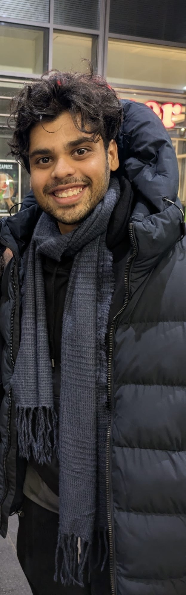

About Me
I am an incoming PhD student in Political Science at the University of Wisconsin–Madison. I currently work as a predoctoral fellow on the European Research Council project “Elections, Violence, and Parties” at the University of Amsterdam, where Dr. Ursula Daxecker is the principal investigator. My research focuses on the determinants, nature, and extent of electoral fraud from a comparative perspective, as well as the mobilization strategies and organizational structures of political parties.
I previously worked as a Research Associate at the Centre for Policy Research with Dr. Rahul Verma, contributing to a project on the strategic placement of political rallies and their electoral effects. I have also served as a Teaching Fellow in the Department of Political Science at Ashoka University.
I hold an MA in Political Science (Political Behavior) from Sciences Po, Paris. My master’s thesis examined partisan perceptions of election outcomes in Madhya Pradesh, India.